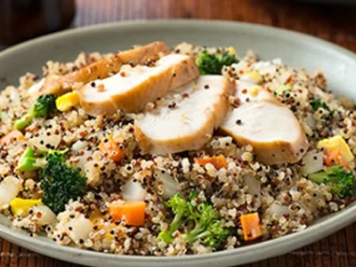

Ingredients
- 2 Tbsp (30 mL) olive oil
- 2 eggs
- salt and pepper
- 1 small white onion, finely chopped
- 1 Tbsp (15 mL) garlic, minced
- 1 carrot, peeled and chopped
- 1 cup tri-colour quinoa, cooked and cooled
- 1 cup small broccoli florets, blanched
- ¼ cup (60 mL) low-sodium soy sauce (approx.)
- 2 boneless, skinless chicken breasts, cooked and thinly sliced

Directions
- Heat half the oil in a large, nonstick skillet set over medium-high heat. Add the eggs; season with salt and pepper. Break the yolks without scrambling with the whites. Cook for 3 to 5 minutes or until yolks and whites are set. Transfer to a cutting board and chop; set aside.
- Heat the remaining oil in the pan set over medium heat. Add the onion and garlic. Cook, stirring often, for 5 to 7 minutes or until tender but not browned.
- Increase the heat to medium-high. Add the carrot; cook for 3 minutes. Stir in the quinoa, broccoli and soy sauce. Cook for 3 minutes or until heated through. Stir in the egg. Divide between 4 plates and top with sliced chicken. Serve with soy sauce.